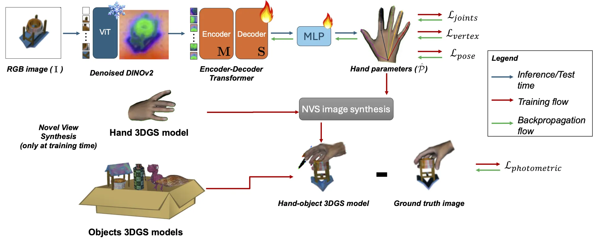

Dexterous robotic grasping with multi-fingered hands remains a significant challenge in robotics. We propose GRASPLAT, a novel approach that combines the usability of RGB methods with the accuracy of 3D techniques through advanced Novel View Synthesis (NVS).
Our key insight is that by synthesizing physically plausible images of a hand grasping an object, we can accurately regress corresponding hand joint configurations for successful grasps without requiring complete 3D scans during inference.
GRASPLAT leverages 3D Gaussian Splatting to generate high-fidelity novel views of real hand-object interactions, enabling end-to-end training with RGB data. Our approach compares rendered novel views with actual grasp appearances using photometric loss, minimizing discrepancies between rendered and real images.
Extensive experiments on both synthetic and real-world datasets demonstrate that GRASPLAT improves grasp success rates by up to 36.9% compared to existing image-based methods.

GRASPLAT predicts 3D hand poses from a single RGB image using a frozen, denoised DINOv2 backbone. The extracted feature map is processed by a spatial transformer to estimate hand parameters, which are then refined by an MLP. During training, a feedback mechanism based on 3D Gaussian Splatting (3DGS) refines predictions by comparing rendered and real images. To accelerate training, 3DGS models are precomputed before training and then cached. The rendered scene includes both the object and the articulated hand, posed according to the predicted parameters.
This project received support from the H2020 EU project RePAIR (Grant Agreement n° 964854), the Center for Responsible AI, and MPR-2023-12- SACCCT Project 14935 AI.PackBot.
This work was made during an internship of the first author in IST, Lisbon.
@misc{bortolon2025grasplat,
title={GRASPLAT: Enabling dexterous grasping through novel view synthesis},
author={Bortolon, Matteo and Duarte, Nuno Ferreira and Moreno, Plinio and Poiesi, Fabio and Santos-Victor, José and Del Bue, Alessio},
year={2025},
eprint={},
archivePrefix={arXiv},
primaryClass={cs.RO}
}